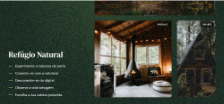

Forest

Este site é um exemplo de alta performance e design contemporâneo utilizando utilitários de CSS modernos.
Destaques: Grid system impecável, componentes reutilizáveis e uma paleta de cores equilibrada que reforça a identidade visual do projeto.
Ficha Técnica: Desenvolvido com foco em Tailwind CSS, garantindo que o site seja extremamente leve e Mobile First.